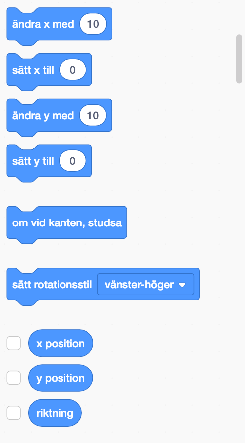

Kodbitar
Programmeringen i Scratch sker med hjälp av kodbitar. Kodbitarna är indelade i nio grupper:
- Rörelse
- Utseende
- Ljud
- Händelser
- Styrning
- Känsel
- Funktioner
- Variabler
- Mitt block
Rörelse
Rörelse-bitarna har färgkodats i blått. Figurens rörelse kontrolleras med hjälp av Rörelse-bitar.

Utseende
Utseende-bitarna har färgkodats i lila. Figurens utseende kontrolleras med hjälp av Utseende-bitar.
Ljud
Ljud-bitarna har färgkodats i ljuslila. Ljud- och MIDI-funktioner kontrolleras med Lud-bitar.
Händelser
Händelse-bitarna har färgkodats i gulorange. Händelse-bitar används för att starta skript (kommenderingsserier). Du kan använda Händelse-bitar för att få dina figurer att skicka meddelanden till varandra.
Styrning
Styrning-bitarna har färgkodats i orange. Styrning-bitar används för att styra skript. Styrning-bitar innehåller slingor och villkorssatser.
Känsel
Känsel-bitarna har färgkodats i blågrönt. Känsel-bitar används för att detektera olika saker i dina projekt.
Funktioner
Funktioner-bitarna har färgkodats i ljusgrönt. Funktioner-bitar används för bearbetning av matematiska ekvationer och strängar (text)
Variabler
Variabler-bitar har färgkodats i mörkorange. Variabler-bitar används när du skapar variabler för att lagra värden och strängar (text). Man kan också skapa Lista-bitar där. Man skapar och behandlar listor med Lista-bitar.
Mitt block
Mitt block-bitar har färgkodats i mörk rosenfärg. Man kan skapa nya bitar med Mitt block-bitar.